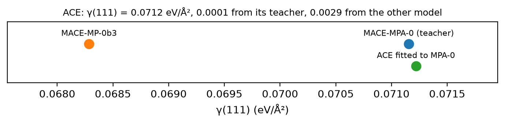

Tutorial 8: the truth about the truth¶
A fitted potential is judged against its reference labels. But the labels came from somewhere: one functional, one code, one set of convergence choices or, here, one foundation model with its own training data. This notebook asks two reference models the same question, the surface energy of Si(111), and shows that an ACE fit faithfully reproduces whichever one taught it.
Goals
- Compute \(\gamma(111)\) with two MIT-licensed MACE foundation models, MACE-MPA-0 and MACE-MP-0b3, and measure how far apart they are.
- Fit ACE to a small surface dataset labelled by one of them, and see whose answer it gives.
- Refit the same recipe to the other model's labels, and see the answer move.
It uses the fitting steps of Tutorial 4, and is adapted from notebook C of the MLIP School 2026. The surface dataset is the recipe a later tutorial on surfaces builds step by step.
Run this notebook. Install uv. Then run this command:
uvx marimo edit --sandbox https://raw.githubusercontent.com/ACEsuit/ace-jax/main/docs/user/tutorials/notebooks/school_truth_si.py
The notebook opens in your browser. You do not need an account. You can also open the notebook in molab, the marimo hosted service. You must sign in to run it there.
This website shows a static copy of the notebook, run on a CPU when the site was built. Run time: approximately 1 minute.
import pathlib
import time
import jax
jax.config.update("jax_enable_x64", True) # fitting needs float64
import marimo as mo
import matplotlib.pyplot as plt
import numpy as np
from ace_jax import ACECalculator
from ace_jax.tutorials import labels as L
from ace_jax.tutorials import structures as T
Step 1: two labellers¶
Both models come from ACEsuit/mace-foundations and are MIT-licensed:
| name | model | trained on |
|---|---|---|
mpa-0 |
MACE-MPA-0 (medium) | MPtrj + sAlex, PBE(+U) |
mp-0b3 |
MACE-MP-0b3 (medium) | MPtrj, PBE(+U) |
They share a functional family but differ in training data and model details, so they are two different "truths". Their labels for every structure in this notebook are included with the tutorial.
The surface energy of a slab with \(N\) atoms and two faces of area \(A\) is
The slab is cut on the wide "shuffle" (111) plane of silicon, with one broken bond for each surface atom. It has 6 layers and 8 Å of vacuum. It is not relaxed.
URL = "https://raw.githubusercontent.com/ACEsuit/ace-jax/main/docs/user/tutorials/data/school/c/"
_here = (mo.notebook_dir() / "../data/school/c") if mo.notebook_dir() else None
caches = {}
for _m in ("mpa-0", "mp-0b3"):
_f = f"labels-{_m}.xyz"
caches[_m] = L.LabelCache.from_file(_here / _f if _here is not None and (_here / _f).exists() else URL + _f)
structures = T.c_structures()
work = pathlib.Path("ace_jax_tutorial_8")
work.mkdir(exist_ok=True)
def gamma_of(bulk_atoms, e_bulk, slab_atoms, e_slab):
return T.surface_energy(e_bulk, len(bulk_atoms), e_slab, slab_atoms)
truths = {}
for _m in ("mpa-0", "mp-0b3"):
_b, _s = L.label([structures["bulk"], structures["slab111"]], model=_m, cache=caches[_m])
truths[_m] = gamma_of(_b, _b.info["energy"], _s, _s.info["energy"])
gap = abs(truths["mpa-0"] - truths["mp-0b3"]) / truths["mpa-0"]
mo.md("| labeller | γ(111) (eV/Ų) | γ(111) (J/m²) |\n|---|---|---|\n"
+ "\n".join(f"| `{m}` | {g:.4f} | {g * 16.0218:.3f} |" for m, g in truths.items())
+ f"\n\nThe two references differ by **{100 * gap:.1f}%**.")
| labeller | γ(111) (eV/Ų) | γ(111) (J/m²) |
|---|---|---|
mpa-0 |
0.0712 | 1.140 |
mp-0b3 |
0.0683 | 1.094 |
The two references differ by 4.0%.
Step 2: fit to one teacher¶
The surface dataset has 8 rattled bulk cells (lattice scaled by 0.94 to
1.06, rattle 0.02 Å) and 4-layer (100), (110) and (111) slabs: 11
structures. Label it with mpa-0 and fit a linear ACE model, order 3 and
total degree 10, cutoff 5.5 Å. The 6-layer slab that \(\gamma\) is computed
on is not in the training set.
from ace_jax.basis.model import BasisSpec
from ace_jax.fit.pipeline import FitConfig, fit, load_fit_data, save_model
def fit_and_gamma(model):
"""Fit the surface recipe to `model`'s labels; gamma(111) of the fitted potential."""
labelled = L.label(structures["recipe"], model=model, cache=caches[model])
cfg = FitConfig(model=BasisSpec(order=3, max_degree=10, rcut=5.5, elements=("Si",)), arm="linear",
m_per_species=0, e0="lsq", opt="lbfgs", r0=None, rungs=("map",),
predict_stats="recompute", predict_train=False,
energy_key="energy", force_key="forces", virial_key="virial").validate()
res = fit(cfg, load_fit_data(cfg, train=labelled, log=lambda *a: None), log=lambda *a: None)
calc = ACECalculator(str(save_model(res, work / f"fit-{model}")), skin=0)
E = []
for _a in (structures["bulk"], structures["slab111"]):
_b = _a.copy(); _b.calc = calc
E.append(_b.get_potential_energy())
return gamma_of(structures["bulk"], E[0], structures["slab111"], E[1])
_t = time.time()
gamma_fit = {"mpa-0": fit_and_gamma("mpa-0")}
fit_seconds = time.time() - _t
distance_to_teacher = abs(gamma_fit["mpa-0"] - truths["mpa-0"])
distance_to_other = abs(gamma_fit["mpa-0"] - truths["mp-0b3"])
_fig, _ax = plt.subplots(figsize=(7, 1.8))
for _g, _lab, _c, _y in ((truths["mpa-0"], "MACE-MPA-0 (teacher)", "C0", 0.7),
(truths["mp-0b3"], "MACE-MP-0b3", "C1", 0.7),
(gamma_fit["mpa-0"], "ACE fitted to MPA-0", "C2", 0.3)):
_ax.plot([_g], [_y], "o", c=_c, ms=9); _ax.annotate(_lab, (_g, _y), (0, 8), textcoords="offset points",
ha="center", fontsize=8)
_vals = np.array([truths["mpa-0"], truths["mp-0b3"], gamma_fit["mpa-0"]])
_pad = 0.25 * max(np.ptp(_vals), 1e-3)
_ax.set(xlim=(_vals.min() - _pad, _vals.max() + _pad), ylim=(0, 1.1), yticks=[], xlabel="γ(111) (eV/Ų)")
_ax.set_title(f"ACE: γ(111) = {gamma_fit['mpa-0']:.4f} eV/Ų, {distance_to_teacher:.4f} from its "
f"teacher, {distance_to_other:.4f} from the other model", fontsize=9)
_fig.tight_layout()
_fig

Checkpoint 1 passed: the fit sits closer to the model that labelled its data.
Step 3: the same recipe, the other teacher¶
Nothing in Step 2 was wrong. Label the same 11 structures with mp-0b3
and fit again with exactly the same settings: the result is a potential
just as good, aimed at a different answer.
both_fits = {**gamma_fit, "mp-0b3": fit_and_gamma("mp-0b3")} # a new dict: marimo cells don't mutate
errors = {m: abs(both_fits[m] - truths[m]) for m in truths}
mo.md("| potential | trained on | γ(111) (eV/Ų) | error against its own teacher |\n|---|---|---|---|\n"
+ "\n".join(f"| ACE | `{m}` labels | {both_fits[m]:.4f} | {errors[m]:.4f} |" for m in truths)
+ "\n| | | | |\n"
+ "\n".join(f"| `{m}` | (itself) | {truths[m]:.4f} | |" for m in truths))
| potential | trained on | γ(111) (eV/Ų) | error against its own teacher |
|---|---|---|---|
| ACE | mpa-0 labels |
0.0712 | 0.0001 |
| ACE | mp-0b3 labels |
0.0682 | 0.0001 |
mpa-0 |
(itself) | 0.0712 | |
mp-0b3 |
(itself) | 0.0683 |
Checkpoint 2 passed: each fit reproduces its own teacher to within 0.0001 eV/Ų, less than half the 4.0% gap between the teachers.
The same lesson, one level down¶
This is not special to machine learning.
- A DFT surface energy depends on the functional: PBE and r²SCAN disagree about silicon surfaces by several percent.
- It depends on k-point sampling, the plane-wave cutoff, slab thickness and vacuum, each a convergence parameter somebody chose.
- A foundation model used as a reference adds its own training data and fitting error on top.
A potential inherits every one of these choices through its labels, and then reproduces them at millions of atom-steps per second. The error bar on a predicted property is the fitting error plus the uncertainty of the reference, and the second can be the larger.
Reflection¶
You are asked for the surface energy of Si(111) for a paper. What do you report, and what do you state alongside it? Write your answer before opening the model answer.
A model answer
Report the number together with the ground it stands on: which reference labelled the training set, which functional that reference used, and the convergence choices behind it (slab thickness, vacuum, k-points). Without those, the value is neither reproducible nor comparable with anyone else's. Where it matters, quote more than one reference and treat their spread as a systematic uncertainty: it can be larger than the fitting error. The fitting error says how faithfully the potential copied its teacher, not whether the teacher was right.
Exercises¶
- Other facets. The recipe already holds 4-layer (100) and (110) slabs. Compute \(\gamma\) for each from both labellers (the cached labels cover them), and compare the gap facet by facet.
- Slab thickness. \(\gamma\) above uses a 6-layer slab. With the
labeller installed (
pip install mace-torch --extra-index-url https://download.pytorch.org/whl/cpu), compute \(\gamma(111)\) fromT.slab((1, 1, 1), n)for n = 4, 6, 8, 10. When is it converged? - Basis size. Refit at total degree 8 and 12. Does checkpoint 2 still pass, and which error grows first?
Summary¶
- Two reasonable reference models disagree about a surface energy.
- An ACE fit tracks whichever reference it was taught, to well within that disagreement.
- Report a predicted property with its reference, and count the reference's uncertainty in the error bar.